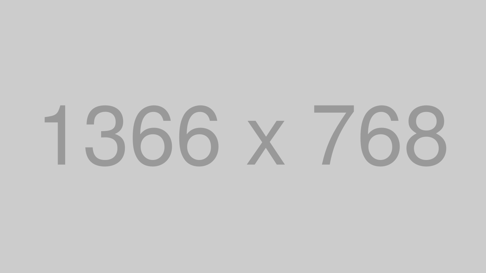

WORKS


Africafe 2022 ～ウスビ・サコ先生と語る教育と未来～
『Africafe（アフリカフェ）は明星大学人文学部国際コミュニケーション学科
菊池ゼミの学生たちが2010年より毎年開催しており、
「助け合い、支え合い、輝いて生きる」というアフリカの素晴らしさを伝える学生企画イベントです。（URL:
Africafe 2022 ～ウスビ・サコ先生と語る教育と未来～
）』
私が２年生の12月頃、パルテノン多摩でアフリカフェというイベントに参加させてもらいました。